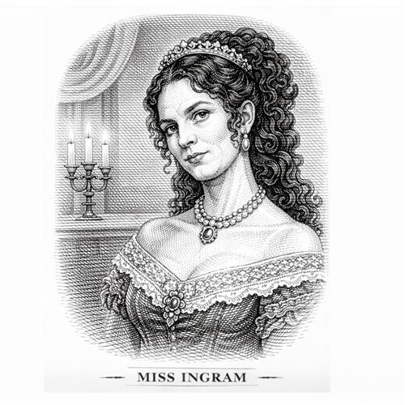

Blanche Ingram

La señorita Ingram es una joven de la alta sociedad que visita Thornfield junto a un grupo de aristócratas que van a pasar allí unos días. Es descrita como una mujer de una belleza deslumbrante.
Personalidad e impacto en la vida de Jane
Es orgullosa, sarcástica y profundamente clasista. Blanche ve el mundo como un escenario para su propio lucimiento. No tiene interés real en Rochester como persona, sino en su fortuna y en su estatus.
Desprecia abiertamente a las institutrices delante de Jane y trata a Adèle con frialdad
Ver a Blanche junto a Rochester hace que Jane se sienta más "pequeña, plana y oscura" que nunca. Jane llega a dibujar un autorretrato de sí misma y un retrato idealizado de Blanche para compararlos y castigarse por haber creído que Rochester podría amarla a ella.
Gracias al comportamiento de la señorita Ingram, Jane se da cuenta de que la riqueza y la belleza no significan nada si el espíritu es pobre. A pesar de ser hermosa, no consigue conectar con Rochester, lo que nos da una verdadera visión de la conexión real que Jane tiene con él
Importancia del personaje
Brontë utiliza también a este personaje para criticar los matrimonios por conveniencia de la época victoriana. Ella representa el "ideal" social de esposa para un hombre como Rochester, pero la autora demuestra que ese ideal es una cáscara vacía.
Es la anti-Jane. Representa todo lo que la sociedad valora (estatus, dinero, belleza física) frente a lo que Brontë valora (intelecto, moralidad, pasión verdadera). Su fracaso al intentar conquistar a Rochester demuestra que la señorita Ingram solo ama el dinero.